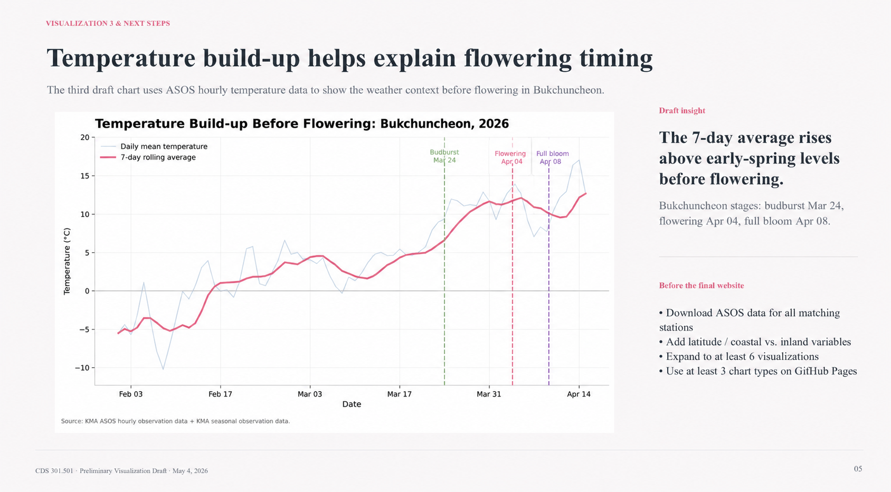

Regions compared across the 2026 bloom window
South Korea · Spring 2026 · KMA observations
Cherry Blossoms in South Korea
This website compares when cherry blossoms flowered across South Korea in 2026, how those dates differed from normal, and how temperature helps explain part of the pattern.
Abstract
Cherry blossom dates reveal regional differences in spring timing.
This project explores how cherry blossom flowering dates varied across South Korea in 2026. Using Korea Meteorological Administration seasonal observations and ASOS temperature data, the website compares regional bloom timing, differences from long-term normal dates, temperature conditions before flowering, and longer-term trends. The main goal is to show that 2026 blooms were generally earlier than normal, but the pattern still depended strongly on regional geography and local weather conditions.
Between Changwon's first bloom and Baengnyeongdo's latest bloom
Seoul's 2026 bloom compared with its normal date, the largest early shift
Historical trend and projection window in the long-term view
01 · Regional Bloom Wave
The bloom spread across regions over three weeks.
This section shows the actual order of flowering dates in 2026. The bloom began in Changwon on March 24, clustered across many regions in late March, and continued into April for several inland, northern, and island stations.
Geographic station map
pink = March bloom, blue = April bloom
Mar 24-Mar 30
Apr 01-Apr 15
selected region
02 · Temperature Before Flowering
Temperature helps, but it does not explain bloom timing alone.
ASOS stands for Automated Synoptic Observing System. These Korea Meteorological Administration stations record weather conditions at regular intervals. Here, ASOS temperature data is used to compare pre-flowering warmth with the observed 2026 flowering dates.
- ASOS data provides the temperature observations used in the temperature comparison.
- The comparison focuses on average warmth before each region's flowering date.
- Temperature helps explain part of the pattern, but it does not explain every regional difference.
Phenology Lens
Reading the bloom as three visible stages.
Figure 4 marks three biological checkpoints in the cherry blossom cycle. The detailed example uses Bukchuncheon because the dataset includes budburst, flowering, and full-bloom dates for that station.
The first visible opening of buds after accumulated warmth.
The date used for regional comparison, when blossoms first become visible.
The peak stage after several additional warm days.

01
Budburst
Mar 24 · The buds open and the tree starts visibly responding to accumulated warmth.

02
Flowering
Apr 04 · Blossoms become visible, matching the key event used in the regional comparison.

03
Full Bloom
Apr 08 · The canopy reaches peak bloom after several more warm days.
03 · Long-Term Signal
Long-term records show earlier flowering over time.
Historical data varies year to year, but the overall trend points toward earlier spring flowering. Figures 5 and 6 show this pattern at the national scale and for Bukchuncheon.
Projection note. Figures 5 and 6 use simple linear projections, so the future dates should be read as rough scenarios rather than exact predictions.
Chart Evidence
Charts and supporting views.
This section collects the main charts and supporting views used in the analysis. Figures 1 and 2 should be read together: Figure 1 shows the actual 2026 bloom order, while Figure 2 shows whether each region bloomed earlier or later than its own normal date.

Figure 1 support
bloom dates by count

Figure 3 support
independent regions, no connecting line

Figure 4 label guide
separated stage markers


Conclusion
Cherry blossom timing is changing across regions.
The 2026 data shows clear regional differences, many earlier-than-normal flowering dates, and a relationship between warmth and bloom timing. The long-term charts also show that flowering has generally shifted earlier over time.